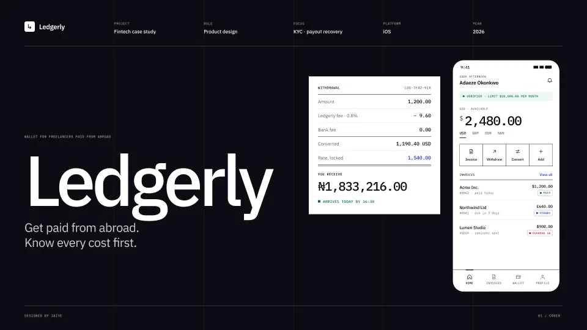

Product design · Payouts for freelancers
Ledgerly
Get paid from abroad. Know every cost first.

The problem
Freelancers paid from abroad lose money to fees they only see after the transfer, and a failed payout leaves them guessing where their money went.
What I did
- Listed every fee and the final amount before anyone commits
- Designed KYC as a hub, not a tunnel: each step saves and can be left
- Designed failed-payout recovery that names the cause and offers the fastest fix
0Surprise fees
30 minRate held during a withdrawal
2Critical flows, failure branches included
How it came together
- 01
Research
Published freelancer payment research and public complaints, mapped into a journey.
- 02
Failure map
Listed every way a payout can fail and what the user sees.
- 03
Flows
KYC onboarding and withdrawal with failed-payout recovery.
- 04
Design
Ledger-style screens where figures line up and nothing is hidden.
The screens
3 boards from the Figma file
Select any image to see it full size.
Want something like Ledgerly?
Tell me what you're building. I reply within a day with a fixed quote.